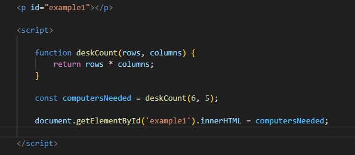

When a function is called, the computer will run through the function’s code and evaluate the
result of calling the function. By default that resulting value is undefined.
The Return Keyword, is used to capture the result of a function.
Functions return (pass back) values using the return keyword. return ends function execution and
returns the specified value to the location where it was called.
When you forget to use the return keyword, the function will return undefined by default.
TechMate coding school just opened it's physical training centre and needs to buy computers to fill the class for all students. The students desk has been arranged and it has 6 rows and 5 columns. Determine how many computers TechMate needs to buy to fill all the desk using a function return statement.

We can also use the return value of a function inside another function. These functions being
called within another function are often referred to as helper functions. Since each function
is carrying out a specific task, it makes our code easier to read and debug if necessary.
We can use functions to section off small bits of logic or tasks, then use them when we need to.
Writing helper functions can help take large and difficult tasks and break them into smaller and
more manageable tasks.
See Code sample below